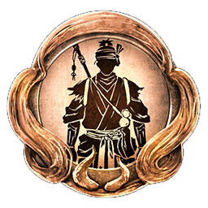
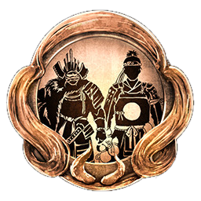
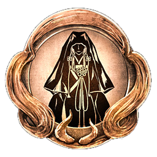

Nioh 2 has a total of: 88 achievements / trophies split into 81 Bronze, 5 Silver, 1 Gold, and 1 Platinum trophy.
There are a few achievements that require the player to continue past New Game. The achievement "Way of the
Vanquisher" requires the player to reach Dream of the Demon (NG+2). The remaining 87 achievements can be
completed on NG and NG +1. It is recommended to continue playing past NG instead of farming / griding on NG. By
playing the game past NG most if not all achievements will be unlocked. Below is a table containing all of the
achievements, in the order of easiest to acquire to the hardest to acquire.
Order of achievements and the data for the guide comes from PYJAMADS' Nioh 2 - 100% completion guide, and
Phantom2654's Nioh 2 Trophy Guide which can be found
here and
here.
| Achievement | Description |
|---|---|
You Are Nioh

|
[Platinum Trophy] You have unlocked all Achievements! |
Dawn of a Dream

|
Befriended Tokichiro. Complete the Main Mission The Village of Cursed Blossoms. |
An Electrifying Triumph

|
Defeated Imagawa Yoshimoto, and was made a Samurai. Complete the Main Mission The Hiden Monsters of Okehazama. |
Hideyoshi

|
Decided to share a name with Tokichiro. Complete the Soaring Region (2nd region) and move onto the Shadow Region (3rd region). |
The Paths We Tread

|
Parted ways with Tokichiro. Completed the Main Mission The Sun Sets on Mount Tenno. |
Dream's Toll

|
Defeated Tokichiro. Completed the Main Mission The Two Faces of Hospitality. |
|
Mother and Child

|
Reunited with your mother in the Interim. Completed the Main Mission The High-Spirited Demon. |
What is Written

|
Fulfilled your ultimate destiny. Completed the Main Mission Sealed Fate. |
| Appraised your Tea Utensils 50 times. You can appraise Tea Utensils by going to Starting Point ⟶ Hidden Teahouse ⟶ Appraise Tea Utensils. You can check the progress by going to Titles ⟶ Title List ⟶ Ungyo Table List ⟶ Reputable Tea Ceremony Master. The Guardian Spirit Isanagami increases Tea Utensil drop rate by 10 %. | |